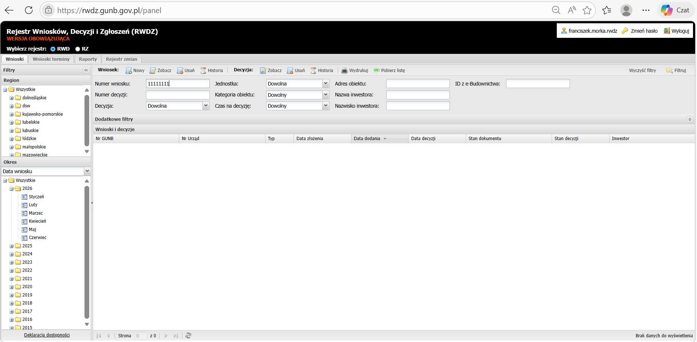
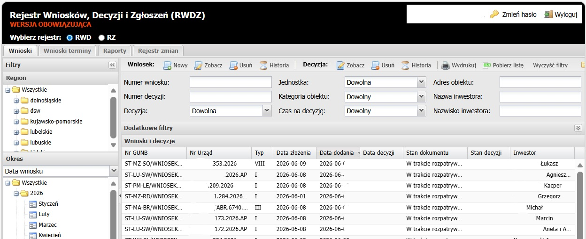
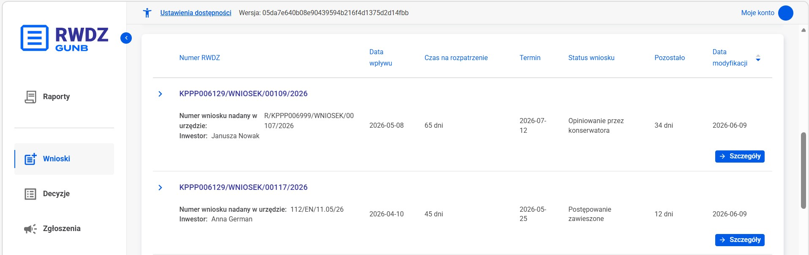

01
Nowoczesny wygląd
Czysty, uporządkowany interfejs zaprojektowany od nowa.
Rejestr wniosków, decyzji i zgłoszeń w nowoczesnej odsłonie.
Dotychczasowy RWDZ spełnia swoją funkcję — ale ma już swoje lata. Nowa wersja usprawnia RWDZ w każdym obszarze.

Nowy RWDZ porządkuje najważniejsze informacje, upraszcza wyszukiwanie i pokazuje dane w bardziej czytelny sposób.


Sześć usprawnień, które razem zmieniają sposób, w jaki korzystasz z rejestru.
Czysty, uporządkowany interfejs zaprojektowany od nowa.
Najważniejsze filtry i wyszukiwarka są łatwiej dostępne.
Informacje o sprawach są pokazane w prostszej strukturze.
Interfejs projektowany zgodnie z zasadami dostępności cyfrowej.
System tworzony z myślą o stabilności i ochronie danych.
Połączenie z SOPAB, eCRUB i innymi rejestrami — dane w jednym miejscu.
Nowy panel porządkuje sprawy, wnioski, decyzje i zgłoszenia. Najważniejsze akcje są widoczne od razu, a układ pomaga szybciej zrozumieć status sprawy.
Boczne menu prowadzi prosto do wniosków, decyzji i zgłoszeń — bez przeszukiwania zakładek.
Szukaj po numerze sprawy, adresie inwestycji lub danych inwestora. Filtry są w zasięgu ręki.
Najważniejsze widoki rozdzielone na „Moje sprawy" i „Wszystkie sprawy", z prostym podziałem na statusy.
„Dodaj wniosek" i „Szczegóły" są wyraźne i przewidywalne — wiesz, gdzie kliknąć.
Termin, czas na rozpatrzenie i status widać bez wchodzenia w szczegóły.
Nowe formularze
Nowy RWDZ jest łatwiejszy w obsłudze także dla osób korzystających z klawiatury, technologii wspomagających i ustawień dostępności.
Ustawienia dostępnościLogiczna kolejność fokusu i widoczne stany zaznaczenia.
Czytelne kolory i typografia spełniające wymagania WCAG.
Treści są prezentowane w czytelnej hierarchii.
Animacje można wyłączyć — strona respektuje ustawienia systemu.